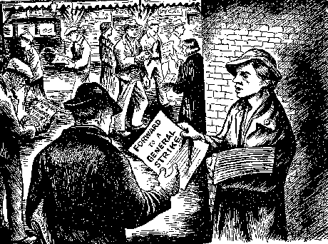

The General Strike - Page 5
There has been a great deal of confusion as to just what was meant by the term, General Strike. In the past any strike of considerable proportions has usually been referred to as a "General Strike." But many times this definition was not really applicable. Much of the misconception results from an erroneous or limited conception as to what a General Strike is and what it is supposed to do. The General Strike, as its name implies, must be a revolutionary or class strike instead of a strike for amelioration of conditions. It must be designed to abolish private ownership of the means of life and to supplant it with social ownership. It must be a strike, not of a few local, industrial or national groupings of workers but of the industrial workers of the world as an entity. If we keep in mind that there are four phases of the General Strike it will help to understand clearly what we mean by using the term:
- A General Strike in a community.
- A General Strike in an Industry.
- A national General Strike.
- A revolutionary or class strike-- THE General Strike.
It will be seen from the above that, while the first three are General Strikes in the limited and commonly accpeted meaning of the term, only the last, or revolutionary class strike, is a General Strike in the full meaning of the term. The first three have been attempted at times with varying degrees of success, but the last has yet to be organized and made effective.
Thus, for instance, the display of industrial power by the workers of Finland and Russia in 1905 or that in connection with the upheaval in Moscow which resulted in the overthrow of the Kerensky government in 1917, or the strike of the French Railroad workers in 1909, the great strike in Sweden in 1909, or the strike in Germany when the administration of Von Kapp was embarrassed in the same manner. There were also important General Strikes in Belgium in 1913, in Buenos Aries in 1920 and again in Great Britain in 1926. All these have been referred to as "General Strikes." And they are General Strikes in the limited sense defined above.

The so-called General Strike in Denmark which was called by the Socialists to block the forming of an unpopular cabinet by the King is an example in point, as is the now famous attempt of the Italian workers to take over the industries in 1920.
The I.W.W. strikes of 100,000 lumber jacks or 40,000 copper miners in 1917 are fair examples of the industrial General Strike, while those affecting Seattle and Winnipeg are examples of the community General Strike. Volumes might be written about each of the instances cited. But in the end it would be plain that in each case the strikes did not cover sufficient area and were not supported by a sufficient number of workers in the various industries. Nor was the abolition of wage-slavery the objective of these strikes. In other words they were merely the foreshadowing of what Labor could do for itself under greater provocation, inspired by a greater sense of solidarity and with a more perfected organization at its disposal.
The conditions necessary for the successful operation of any of the four kinds of General Strike enumerated above have never existed. But, because it has not as yet been possible to use the economic power of Labor to full advantage, is no sign that such conditions will never exist. It has often been said, quite truthfully that, "one swallow does not make the spring." It is equally true that swallows never visit us in the dead of winter. The fact that Labor has succeeded to a limited extent indicates that it can use its economic power to a much greater extent.
The General Strike, once clearly defined and understood, offers Labor a weapon in the use of which Labor has shown great aptitude and willingness-- a weapon with which all other weapons in the class war are puny in comparison. Just as gunpowder replaced the bow and arrow, so economic action will displace Labor's cruder and less potent weapons in the final struggle for emancipation from wage slavery. Only the most shallow-minded critics of working class tactics will seek to discourage the use of Labor's greatest power for the attainment of Labor's highest goal. And only the most superficial observers can fail to see that the organizational plan of the I.W.W. is ideally constructed to enable Labor to use that power.
The I.W.W. believes that the building of the new society, especially during the period of crisis, is at least as important as the abolition of the old. This is not merely a dogma; it is sound tactics. If the aim of the social revolution is to achieve the socialization and democratic control of industry, the time to make that achievement a fact is during the revolutionary crisis, and with as little delay, red-tape or middle class misdirection as possible. At all events it would be fatal to lose track of the goal during the period of turmoil. It should be plain, even to the most casual observer, that European tactics are not altogether suitable for the needs of American labor. In the U.S.A. there is not one, but three distinct types of culture-- the industrial east and middle west, the feudal south and the still poineering west coast. In any of these it is apparent that it would be an easy thing, under incitation, for the class war to degenerate into a religious, political or race war. And it is even more apparent that the impact of mob violence on the highly developed industrial organism would result in a disaster which might result in universal destruction and ultimate chaos. Sometimes one is forced to wonder at the temerity of the leadership of the American Communist movement in thinking that they can control and direct to constructive ends the sinister forces in the Pandora box of civil war, which they seem eager to release upon a land whose language they hardly know how to speak.
The I.W.W. has always taken the position that armed insurrection in a technically advanced country like the U.S.A. would be quite a different thing from an armed insurrection in a technically backward and largely agricultural country like Russia-- particularly under conditions which prevailed in Moscow and Petrograd following the armistice in 1918. What American conditions demand is a large scale operation in the nature of a well-co-ordinated lockout of the Captains of Finance by both workers and technicians which would put an end to the profit system but leave the production and transportation of goods unimpaired. This, coupled with the program of picketing the industries by the unemployed, is what the I.W.W. has in mind in advocating the General Strike. Anything less than this or more, is simply adding confusion unto confusion. The logic runs like this: A perfect modern timepiece can be kicked apart as easily as a tin toy; but it is much harder to put together again.
In America the I.W.W. is, and has been since its inception, the standard bearer of revolutionary industrial unionism. From the very beginning the I.W.W. has been industrially-minded. Largely as the result of its constant insistence on the use of economic power, both Socialists and Communists have been forced to admit that, in the revolutionary movement, the labor union is the fighting vanguard. Both parties now seek industrial contacts and both stand, theoretically at least, in favor of industrial unionism. Both will admit, when pinned down to it, that the future society will be organized on the basis of industrial administration rather than poltical government. The trouble is both parties, due no doubt, to the generous admixture of non-proletarian elements in their ranks, are top-heavy with politics. They think in terms of political campaigns (and even more foolish things) instead of strikes, picket lines and unions which make the attainment of substantial economic power possible. Political parties being organized within specific national boundaries, must of necessity remain nationalistic. In the very nature of things it is impossible for them to conceive of international solidarity save in terms of the federation of national units.
The I.W.W. on the other hand, ignores national boundary lines and views the problem from the standpoint of the closely knit and organically related, world-embracing interdependence of the producing class. The I.W.W. contends that "hands across the sea" must be the hands of industrial workers and not politicians. Nothing more forcibly proves the correctness of this position than the two world wars. Four and a half millions of Socialist voters in Germany, and additional millions of Socialist voters in France, England and Belgium, were unable to stop the greed-inspired cataclysm which started in 1914 and which has been progressing until the recent world holocaust. Labor gained nothing from these wars. It lost heavily. It paid the cost in blood, misery and substance and it will continue to pay for many years to come. And the goal of Labor is even further now than it was at the start of World War I. The I.W.W. claimed in 1914, and still claims, that, had the workers of Europe been organized industrially, drilled, disciplined and educated in the use of industrial power, not only would these imperialist slaughterfests have been impossible, but the final victory of Labor would long since have been achieved.
If the political saviors of the working class in the U.S.A. would only profit from this fatal mistake and, even now, seek to build up a powerful revolutionary industrial union movement instead of huge, unweildy political machines, the prospects for a clean-cut victory for Labor would be immeasurably brighter.
On the face of it the precise function of a political party with its largely non-proletarian leadership in a labor union movement is difficult to determine. The advantage to the rank and file in the union of control by politicians is still harder to discover. To imply that the industrial union, for instance, needs the leadership and domination of the political party is to imply that union men are incapable of managing their own affairs. To admit that the industrial union is and must be merely the adjunct of the political party is to admit that economic power is of less importance than political power and that the labor union is designed to be merely the plaything of the ambitious politician or the tool of the designing bourgeois leader. If this is to be the attitude why is it necessary to have unions at all? Why not go back to the pre-war "yellow" Socialist who believed that unions were much more of a hinderance than a help to the workers inasmuch as the union distracted the mind of the worker from the ballot box? If the term "Industrial Democracy" means anything at all it means that the membership of the union-- the actual workers in industry-- are entitled to and capable of controlling the affairs of their own organization without interference from outsiders.
In teaching the working class the need for and benefits of revolutionary industrial unionism political parties are doing necessary and valuable work. But in seeking to dominate and control the industrial movement from outside or inside political parties, knowingly or otherwise, they are making a ghastly mistake. The I.W.W. still remembers the lesson of 1914.
It stands to reason that it does not and cannot come within the province of a political party to organize or make effective either a General Strike or any other kind of strike. They can advocate, encourage and call for the full or partial use of Labor's industrial power, but only an organization functioning in industry can make such action possible. The political party lacks the machinery either to call or carry on a strike. If it had this machinery it would be a labor union and not a political party. Only the workers organized into their own unions can function either for purposes of combat or administration in this capacity.
For this reason workers in all countries who wish to use their combined industrial power to put an end to exploitation and wage slavery should seek to build up an irresistable One Big Union movement along lines advocated by the Industrial Workers of the World. And, unless they wish to give up the principle of democracy for the principle of dictatorship, they should refuse to give over the control of their organization to politicians or non-proletarian leaders of any stripe or color.